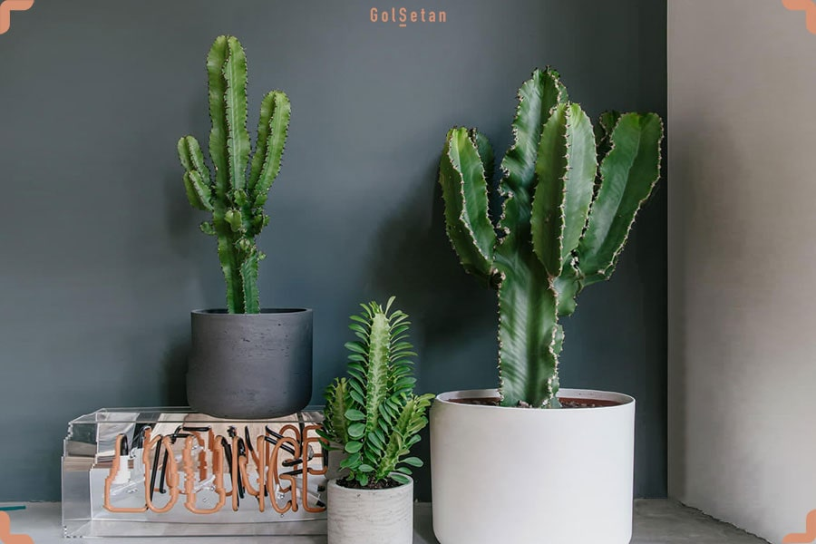
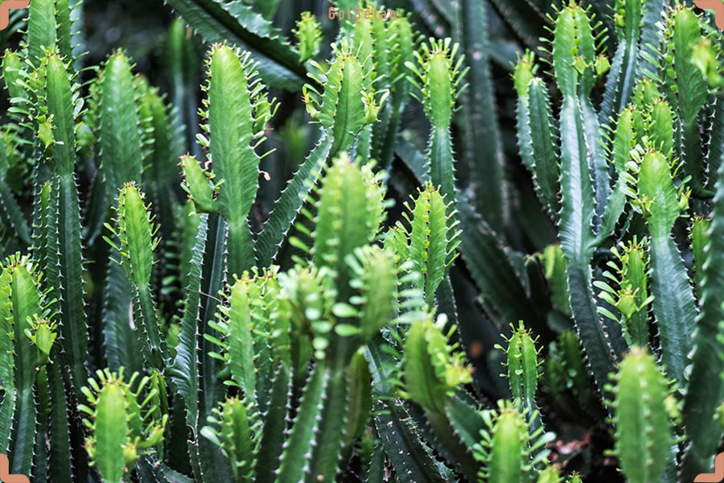
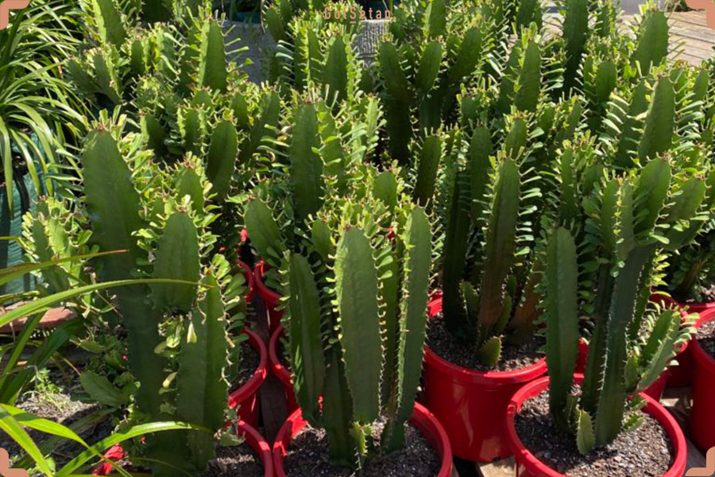
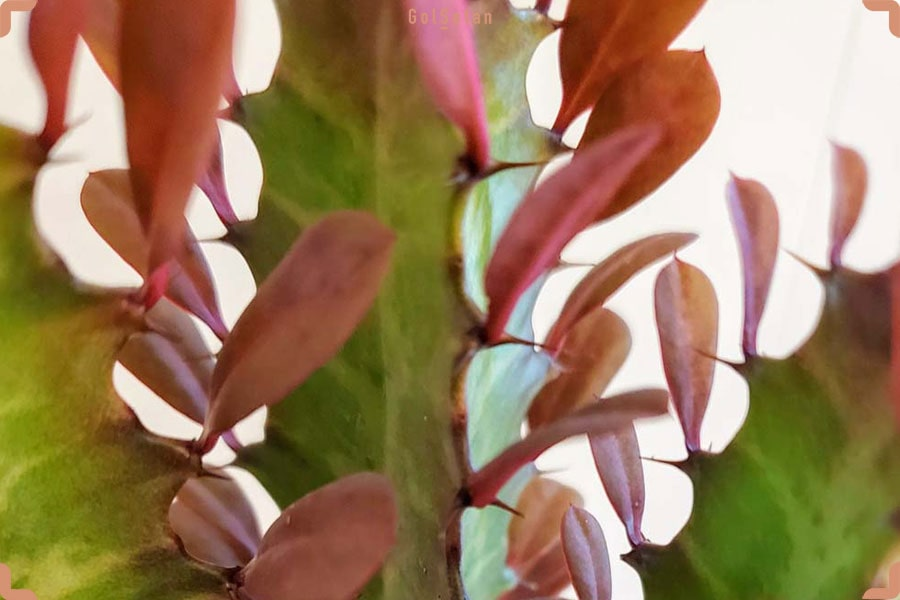

دمای مناسب برای نگهداری از کاکتوس افوربیا

افوربیا متعلق به آفریقای جنوبی است و بیشتر در مناطق خشک رشد میکند. انشعابات افوربیا کمی شبیه شمعدان است؛ بهخاطر همین، عده ای آن را درخت شمعدان هم صدا میکنند! این گیاه از خانواده کاکتوسها با حدود 2400 نوع مختلف، یکی از بزرگترین گونههای گیاهان گلدار بهشمار میرود. افوربیا در مناطق گوناگونی از آفریقا گرفته تا ماداگاسکار، آسیا و حتی در اروپا! رشد میکند،
و
.جالب است بدانید که گونههایی که بومی بخش شمالی و جنوبی آفریقا هستند به دمای زیر 10 درجه نیاز دارند! در نتیجه میتوان گفت دمای مناسب برای نگهداری از کاکتوس افوربیا متغییر است
1400/1/22
34
بهترین روش نگهداری کاکتوس

مهمترین قانون در خصوص آبیاری ساکولنت و کاکتوس این است که خاک آنها را غرقاب نکنید. این قانون درباره نگهداری از کاکتوس افوربیا هم صدق میکند و خاک این کاکتوس نیز مثل سایر انواع کاکتوسها ، باید بین هر بار آبیاری کمی خشک شود. ضمن اینکه این گیاه میتواند از پس خشکی کامل خاک نیز بر آید، اما نه برای مدت طولانی. بههر حال باید درنظر داشته باشید که این به معنای عدم نیاز افوربیا به آب نیست. برای اینکه از خشکی خاک مطمئن شوید، انگشت خود را بهاندازه چند سانتیمتر در خاک فرو کرده و رطوبت لایهی زیرین را بسنجید. اگر هنگام لمس، خشک بهنظر میرسید میتوانید گیاه را آبیاری کنید، اما اگر هنوز مرطوب بود، باید دست نگه داشته و تا زمان خشک شدن خاک صبر کنید.
1400/1/22
34
آفات و بیماری های مستعد در کاکتوس ها

کاکتوس افوربیا در مقایسه با سایر ساکولنتها، کمتر دچار آفات و بیماریها میشود. رایجترین آفات کاکتوس افوربیا تخم عنکبوت، شپشک آردی، مگس سفید و شپشک معمولی هستند.
کنترل این آفات کاری دشوار است، چون بسیار ریز بوده و بهراحتی در بخشهای مختلف گیاه پنهان میشوند. ازاینرو در طول نگهداری از کاکتوس افوریبا مهمترین کار این است که بهخوبی آنها را تشخیص دهید و با توجه به میزان گستردگی آنها در گیاه، برای نابودیشان تصمیم بگیرید.
علاوهبر موارد گفته شده کاکتوس افوربیا مستعد ابتلا به کپک است؛ کپک، یک عفونت قارچی است که بهصورت لکههای پودری سفید و خاکستری در بخشهای مختلف گیاه ظاهر میشود.
1400/1/22
34
تعویض گلدان افوربیا

همانطور که گفتیم افوربیا میتواند بزرگ و قطور شود؛ پس بدیهی است که روزی از گلدان خود خارج میشود. در این حالت، بهتر است گیاه را به گلدان بزرگتری منتقل کنید، اما لازم نیست این تعویض گلدان هر ساله انجام شود. هر دو یا سه سال کافی است. تعویض گلدان میتواند همچنین راه خوبی برای رساندن خاک تازه به افوربیا باشد.همانطور که گفتیم افوربیا میتواند بزرگ و قطور شود؛ پس بدیهی است که روزی از گلدان خود خارج میشود. در این حالت، بهتر است گیاه را به گلدان بزرگتری منتقل کنید، اما لازم نیست این تعویض گلدان هر ساله انجام شود. هر دو یا سه سال کافی است. تعویض گلدان میتواند همچنین راه خوبی برای رساندن خاک تازه به افوربیا باشد.
1400/1/22
34